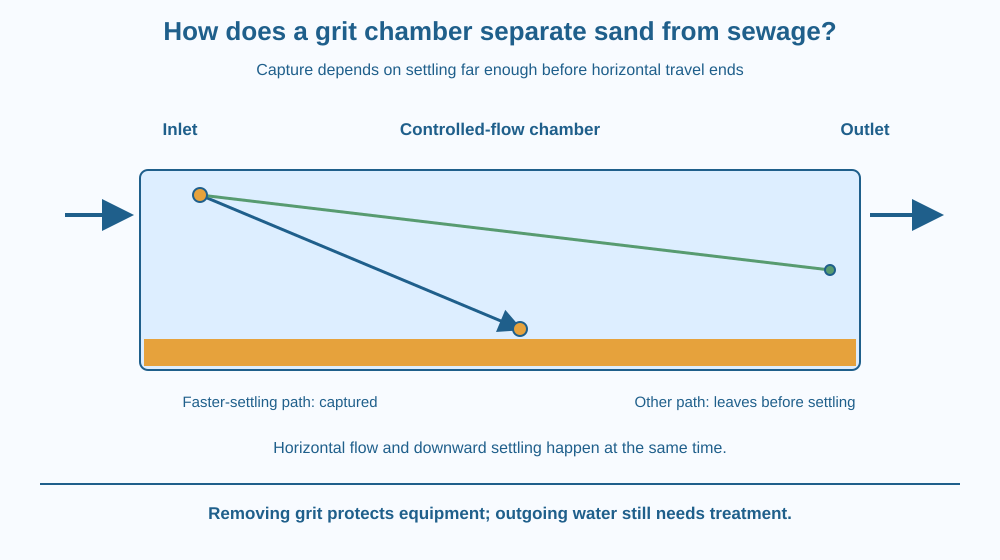

Explain how a treatment system can remove sand-like grit from flowing wastewater without retaining all the water. Connect settling, horizontal travel and residence time. Distinguish a grit chamber from a screen, filter and complete purification system.
Wastewater entering a treatment works can carry sand, grit and many other materials. Sending abrasive particles through every downstream machine would create avoidable wear. A chamber slows and guides the flow so some particles settle before the water continues.
How can a particle reach the bottom before the moving water carries it out? The answer involves two journeys at once: downward settling and horizontal transport. The chamber gives selected particles enough opportunity to finish the first journey before completing the second.
This is separation during flow, not a jar left still indefinitely.
Grit commonly includes dense mineral particles such as sand. Real wastewater contains a mixture of sizes, shapes and densities, so grit is a practical treatment category rather than a single pure material.
A particle in water can settle downward if its motion and surrounding forces favour that movement. Settling speed depends on particle size, density, shape and fluid conditions. It is not determined by density alone: two particles of the same material but different sizes can settle differently.
In a flowing chamber, the particle is also carried horizontally. To be captured, it must reach a collecting region before it travels through the chamber and leaves. The time available for this is related to the chamber's residence time, the time material spends within it.
A simple model compares settling distance with chamber depth. If a particle settles far enough during its available travel time, it reaches the collection region. If not, it can remain in the outgoing flow. The model is useful even without assigning a particular real-world velocity.
Engineers control chamber geometry and flow conditions to favour removal of grit while limiting unnecessary retention of other materials. Slowing everything as much as possible is not automatically best. Too little motion can encourage unwanted organic solids to settle along with the grit.
Actual works use different grit-removal arrangements, including controlled-flow and aerated designs. Their details differ. Our simplified rectangular chamber isolates the main competition between settling and travel time rather than claiming every plant has one identical tank.
A screen removes larger objects by a physical opening size. A filter passes fluid through a porous barrier. A grit chamber relies mainly on particle movement and settling in a controlled flow field. Recognising the mechanism explains why these stages can complement one another.
The outgoing water remains wastewater. Removing mineral grit does not remove every dissolved substance, microorganism or fine suspended particle. Further treatment is required. A chamber that works well at its assigned job can therefore produce water that is still unsuitable for drinking or handling.
Draw a rectangle with water entering at the left and leaving at the right. Put a particle near the upper left corner. Give it a horizontal arrow for flow and a downward arrow for settling.
Combine the two into a sloping path. Make a second particle settle more slowly, so it leaves before reaching the bottom. The contrast connects particle properties with the chamber's available time.
Then lengthen the model chamber while leaving the example flow speed unchanged. The first particle now has more travel time. Explain this as a conditional comparison, not a guarantee that simply enlarging any real tank solves all treatment problems.
The SVG shows a chamber with an inlet, outlet and lower grit-collection region. One particle follows a downward-sloping route to the bottom, while another remains above the bottom when it reaches the outlet.
Separate labels identify horizontal flow, settling distance and available travel time. The water arrow continues through the device, making it clear that the whole flow is not being stored permanently.
A caption states that this is one simplified mechanism model. The drawing does not specify construction dimensions, operating velocities or the full sequence used by a particular Indian wastewater treatment plant.

Wastewater treatment plants protect pumps and later treatment stages by removing inappropriate materials early. Grit can abrade equipment, while rags and larger objects present different problems that screens address.
During heavy rain, drainage inputs and particle loads can change. A real system must operate across changing conditions, so its design cannot be inferred from one calm-water demonstration. Maintenance and collection of settled material also matter.
Never visit an operating treatment area without authorised supervision or use sewage in a home activity. The classroom mechanism can be understood with paper trajectories, leaving the biological and physical hazards of real wastewater entirely out of the exercise.
Use squared paper, a pencil and two colours. No liquid or dirty material is needed.
These step sizes are invented teaching rules, not measured settling speeds. You may lengthen the chamber and repeat the drawing, while keeping the rules fixed. State explicitly that a paper trajectory does not establish real treatment performance.
Suppose the flow carries particles through twice as quickly while their downward settling behaviour remains similar. What happens to the time available to reach the collection region?
Now consider making the flow extremely slow. Why might that capture unwanted organic solids as well as grit? A useful design must meet its target selectively, not simply maximise the amount of material deposited anywhere in the chamber.
What is residence time in the chamber model?
Answer: C — Residence time describes the interval available inside the treatment region.
Why can a settling particle still leave through the outlet?
Answer: B — The particle may not reach the bottom before its horizontal journey ends.
A chamber removes grit successfully. What follows about the outgoing water?
Answer: A — Grit removal targets selected particles rather than every remaining contaminant.
Design two paper chambers that differ only in available horizontal travel time for the same particle model. Show one path that reaches the bottom and one that leaves first.
Explain one possible benefit and one limitation of increasing residence time. End by naming a contamination category the chamber does not completely remove. Your design should describe a separation principle without claiming to produce drinkable water or prescribing a full treatment installation.
A particle can be moving downward and still escape through an outlet. Settling is not enough by itself; it must happen far enough and soon enough. Thinking about both motions together explains why a chamber's geometry and flow conditions matter as much as the statement that grit is dense.
A grit chamber captures particles that settle into a collection region before horizontal flow carries them out; its effluent still requires further treatment.